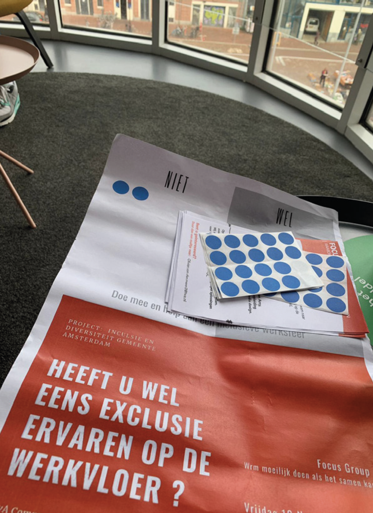

-
Overview
This was a team project in my theme semester Behavioral Design (3rd year of my CMD course). I chose this project because I think more attention should be paid to making a good work environment. Especially now, as more and more employees struggle with burnout symptoms. This project was mainly focused on changing current behaviour into the desired behaviour.
Behavioral Statement:
How could we help employees of the Financial services Department of the City Council of Amsterdam to resolve or prevent undesirable behaviour in the workplace, by encouraging them to dare to address fellow colleagues, by breaking the hierarchy and by eliminating fear of angry reactions or discomfort when entering into conversations?
My role
Lead in Defining + Ideation fases
Used tools
 Adobe Creative Cloud
Adobe Creative Cloud Miro
Miro Notoin
NotoinWant to work together?
Get in touch with me! -
Design Proces
Empathizing
Phase where we tried to get answers to the questions; What are the expectations of the client? Who is the user? What is important to this person? Why is this important to this person?
-
Debriefing
Interpreting the assignment and link back to the client. To make clear what the expectations were and how you are going to achieve them. Preferred form of communication was video calling and emailing.
-
Desk Research
Gaining knowledge of Inclusion and diversity on different work floors, through listening to podcasts and reading articles that were relevant to the topic. Reviewing the current situation at the FD department by reading their Implementation Plan Inclusion and Diversity City Council of Amsterdam. Research has shown that 12% of FD colleagues experience exclusion in the workplace. This includes verbal abuse, discrimination and bullying. The Amsterdam city council does already provide training on exclusivity and inclusiveness. Quotes of FD employees tell us indicate that exclusivity definitely takes place in Amsterdam's FD department. We want to focus on the employees who belong to the LGBTQ+ community because this is the largest group affected by this according to internal surveys.
-
Observation


For the observation, we went to the office of Amsterdam's FD department to see what the current work situation is.
Interesting findings:
- Signs about inclusiveness and about creating a nice working atmosphere (1).
- Poster they put up at the coffee/lunch spot(2).
- Trying to create a nice working atmosphere by putting table tennis tables and workstations with a lounge sofa and comfortable sitting chairs (3).
- Lots of places where you can get together to chat, have lunch or drink coffee.
- Because of corona, many people work from home, so there are not many people in the office.
Defining + Ideation
Creating a point of view of the user by collecting user needs and insights.
By incorporating all the key insights and conclusions from this phase, we arrived at an overall solution. Which states the following:
1) You must first acknowledge the problem. It turned out that a lot of attention was already being paid to this through posters at the workplace, organising workshops and their own implementation plan for inclusion & diversity.
2) Preventing the problem, this part of the solution was also being tackled by the city council. By giving workshops, they draw attention to the problem. The more attention for the problem the more employees become aware of it. Through this aware workplace, the problems will be treated in time and in some cases prevented. Because not enough workers participate in the workshops yet. And that more regularly workshops should be given as repetition of desired behavior. Is the reason why the FD department does not yet have an inclusive workplace.
3) A protocol for guiding colleagues in resolving undesirable behavior. This protocol will apply to everyone in the FD department. A digital application could help in this process. In which every employee is encouraged to report difficult situations in the workplace using the app. This ensures that the colleague concerned can enter a conversation calmly and prepared. Thus avoiding the risk of heated conversations.
-
Opinie Poll
 Collecting votes in the FD department with a poster. The poster contained a statement: "Have you ever experienced exclusion in the workplace?" Employees could then use a sticker to answer with yes or no. You noticed that many people struggled to answer yes. Yet 75% had indicated that they did experienced exclusion, they did indicate that they liked to keep their answer anonymous.
-
Interviews
Writing an interview script and approaching people from the target audience.
Common insights were:
- Discussions many people find difficult.
- People are pigeonholed.
- The problem is not only in the LGBTQ+ community, as discrimination is also experienced.
- Hierarchy plays a role in resolving issues.
- Confidants and other people in high positions are expected to solve the problem.
- People find giving feedback or addressing others on unwanted behavior hard. Most wouldn't dare because they are afraid to be attacked or afraid of becomming the laughingstock.
-
Focus Group
 was a fun way to think about solutions and other questions together with people from the target group.
was a fun way to think about solutions and other questions together with people from the target group.
We used 3 methods in this focus group:(1) Brainwriting, to find out what people mean by an inclusive workplace. (2) Reverse brainstorming, to gather even more possible pain points. (3)Sue framework, this gives you a behavioural analysis of the target group and insight on the unconscious factors that promote or hold back their behaviour. Using the analysis, we were able to find the opportunities for behavioural influence.
New insights where:
- Pains: Shutting out, ignoring, gossiping, no respect and appreciation and the denial of the problem.
- Gains: Feeling more involved, doing a better job, being able to express yourself and promotes mental health.
- Current behaviour: pigeonholing people. placing.
- Desired behaviour: Seeing and treating people equally.
- Habits: Assuming someone else will solve it .
- Anxieties: Being afraid of judgements from others.
-
HCW
Most important - How Can We: "How can we make someone aware of negative judgements?" "How can we make sure people don't pigeonhole each other or themselves become more pigeonholed?" "How can we ensure that employees have more respect & understanding for colleagues who fall outside the norm?" "How can we ensure that addressing undesirable behaviour becomes more accessible?" "How can we neutralise the (social) norm?"
-
Morphological Map

The best HCW are in the morphological map. For each HCW we came up with solution options by using the brainstorming technique called Crazy 8. We also put those options in the morphological map.
-
Dot Voting
Using dot voting, the best solution direction was chosen. The solution direction is to design a digital feedback tool. Previous research found that addressing undesirable behavior was a major barrier and a common problem.
-
Ethical Cycle

Through dot-voting and insights from the Ethical Cycle we have been able to choose the best solution direction. Even though supporting in feedback giving has the most votes we are not convinced that that will completely solve our problem.
Hence, a positive and motivating working atmosphere has also been added to the solution direction. We have now also been able to properly formulate our design challenge:
" How can we use behavioural change to ensure that employees in the FD department treat each other with respect and appreciation, thereby improving the inclusiveness in the workplace is improved? "
Prototyping & Testing
Building and testing a representation of the 3rd phase of the solution: The digital application Speak-Up
-
Prototype 1 - App SpeakUp
-
Testing
Testing with different stakeholders in our target group.
Most important iterations:
- The summary should allow the user be able to save, delete and send to himself via e-mail.
- Put indication of time on the start screen.
- The question, "Are you afraid to start a conversation?" Should be asked first asked.
- A link to intranet so users can see information and details of their colleagues.
- The motivational intermediate pages should bring a stimulating but general message.
- Give a choice earlier in the app to talk to a confidant.
- Approach could be more comprehensive with more pictures, tips and sentiment.
- Style could be a bit better and use more images/pictures. -
The end product
This is the dutch interactive prototype:
-